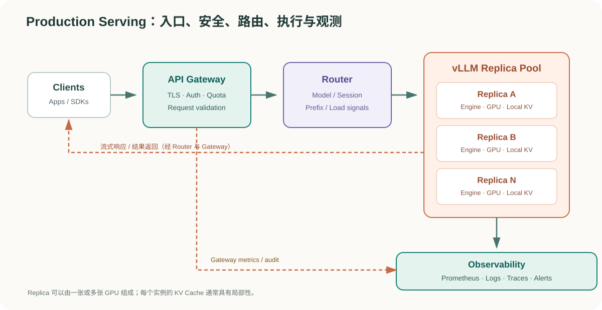

第 15 章 · 生产部署、观测与可靠性
Production Deployment：把 vLLM 变成可靠服务
生产部署不只是让容器启动成功。它还要回答：模型版本如何复现、GPU 与 KV Cache 如何规划、请求如何分流、模型加载期间如何摘流、实例故障时如何恢复，以及上线后如何验证 SLO。
一台机器上能完成一次推理，只证明模型可以运行。生产系统面对的是持续流量、长短不一的请求、模型加载时间、GPU 资源竞争、网络抖动、实例升级和不可预测的故障。设计时必须把“推理引擎”放进完整服务链路：入口、认证、路由、模型副本、监控、告警和回滚。
读完这一章，你应该能够
- 画出 API Gateway / Router / vLLM replicas 的生产拓扑。
- 用固定版本与缓存卷构建可复现的容器部署。
- 理解模型权重、运行时工作区和 KV Cache 如何竞争 GPU 显存。
- 解释 Prefix Cache 局部性与负载均衡之间的冲突。
- 设计健康检查、摘流、滚动升级、故障重试和回滚流程。

15.1 生产服务不是一个 Docker 命令
先把服务拆成四个责任边界：
- 入口层：TLS 终止、身份认证、配额、请求大小限制、审计和 API 兼容。
- 路由层：按模型名称、会话或缓存亲和性选择后端，同时避免把流量集中到单个过热实例。
- 推理层：vLLM Engine 执行模型、调度请求、管理 KV Cache；每个副本有独立运行时和资源预算。
- 运维层：指标、日志、Tracing、模型制品、配置、告警、扩缩容和回滚。
这里的“副本”是一个可独立接收请求的推理服务单元。它可能使用一张 GPU，也可能由 TP / PP 等方式跨多张 GPU 组成；不能默认一个 vLLM replica 就等于一张 GPU。
15.2 可复现的容器运行
vLLM 提供官方 Docker 镜像。容器部署的重点不是复制一条命令，而是把镜像、模型、Tokenizer、配置和凭证分别固定：
- 镜像：生产环境固定 release tag，最好进一步记录 image digest；不要让
latest在不同重启时悄悄改变运行版本。 - 模型：固定模型 revision；Tokenizer 与自定义代码来源也要单独审计。
- 缓存：持久化 Hugging Face 模型缓存；如需复用编译产物，再评估挂载
VLLM_CACHE_ROOT。 - 共享内存：官方 Docker 文档允许使用
--ipc=host或--shm-size为 PyTorch 进程间共享内存提供空间。两者是可选方案，不应把 host IPC 当作所有部署的无条件要求。 - 凭证：通过 Secret Manager 或编排平台注入
HF_TOKEN，不要把访问令牌写进镜像、Git 或 shell 历史。
# 将下面的占位符替换为经过验证的 release tag 与 digest。
export VLLM_IMAGE="vllm/vllm-openai:<release-tag>@sha256:<image-digest>"
# HF_TOKEN 由安全的运行环境预先注入。
docker run --rm --gpus all \
--name vllm-model-a \
-p 127.0.0.1:8000:8000 \
-v "$HOME/.cache/huggingface:/root/.cache/huggingface" \
--env HF_TOKEN \
--ipc=host \
"$VLLM_IMAGE" \
--model Qwen/Qwen3-0.6B \
--host 0.0.0.0 \
--port 8000这里将宿主机端口绑定到 loopback，适合由同机反向代理转发的示例；若 Gateway 在其他机器或 Kubernetes 集群内，应改为相应的私网 Service / 网络暴露方式，而不是直接把模型端口暴露到公网。
官方 CUDA 镜像默认以 root 运行以保持兼容，同时也提供以内置 vllm 用户运行的方式。若选择非 root，需要检查模型缓存、编译缓存和挂载卷的 UID / GID 权限。
15.3 容量规划：权重、运行时与 KV Cache
GPU 显存不是全部留给模型权重。至少要考虑：
- 模型权重及其量化元数据。
- KV Cache：随并发请求、上下文长度和模型结构变化。
- Activation、临时张量、CUDA Graph、通信缓冲区与运行时工作区。
- 碎片、峰值和版本 / 模型路径变化所需的安全余量。
这个式子是容量预算，不是 vLLM 内部的精确显存分配公式。若已知每 token 的 KV Cache 字节数，可先用第 08 章的公式估算理论 token 容量，再通过真实模型启动、负载回放和显存指标校正。
--gpu-memory-utilization、--max-model-len、--max-num-seqs 和 --max-num-batched-tokens 是相互关联的配置。提高并发上限不等于免费增加吞吐；长上下文和并发请求会竞争 KV blocks，最终可能表现为排队、抢占或更高延迟。
不要复制通用显存比例或并发数字。同一张 GPU 上，不同模型层数、KV heads、上下文长度、量化方式、TP 规模和请求分布都会改变可用容量。上线配置必须来自目标模型和目标工作负载的测量。
15.4 路由、流式响应与缓存局部性
如果每个 replica 都有自己的 GPU KV Cache，那么相同 system prompt 被随机送到不同副本时，Prefix Cache 的局部性会变差。Prefix-aware routing 可以把相同前缀的请求尽量送到拥有相应缓存的实例。
但“总是命中缓存的实例”也不是完整策略：一个热门前缀可能让单个实例排队，而其他实例仍然空闲。Production Stack 的 load-aware routing 会把缓存命中收益与实例实时负载共同纳入评分，允许在热实例过载时选择缓存较冷但负载较低的实例。
对于流式输出，Gateway / Reverse Proxy 必须正确处理 SSE：避免意外缓冲流式响应，设置适合长请求的读取超时，并确保客户端断开连接能沿系统链路被正确处理。请求重试也要谨慎：聊天生成通常会产生计算成本，盲目重试 POST 请求可能重复执行。
路由策略不是越“聪明”越好。需要用真实请求前缀、请求长度、并发和缓存指标进行回放，比较缓存命中收益、排队延迟、P99 和副本负载分布。
15.5 健康检查、发布与故障恢复
健康检查要回答不同的问题：
- Startup：模型是否仍在加载、编译或初始化？启动时间较长的模型应使用启动探针，避免过早触发存活检查。
- Readiness：实例现在是否可以接收新流量？未就绪时应从 Service / Router 的可用后端中摘除。
- Liveness：进程是否进入无法自行恢复的故障状态？存活探针失败会触发容器重启，不应把暂时排队或高负载误判为进程死亡。
vLLM 提供 /health 等运维端点；但健康端点的访问控制与 API 业务端点不同，不能因为它用于探针就默认允许公网访问。
滚动升级时，旧实例和新实例会在一段时间内并存。需要预留足够 GPU 容量启动新版本，等待模型加载和预热完成，再让 Router 发送真实流量。新版本通过 canary 后，才逐步替换旧实例。GPU 资源紧张时，配置了 surge 的新 Pod 可能因为没有空闲 GPU 而无法调度；滚动发布参数必须与 GPU 集群容量一起设计。
副本故障时，负载均衡只能把后续请求转移到健康实例；故障副本中正在执行的请求可能中断。客户端重试策略应结合请求 ID、业务幂等性和成本控制，而不是假设推理请求天然可安全重放。
15.6 上线检查单
- 记录 vLLM image tag / digest、模型 revision、Tokenizer revision 和运行参数。
- 用目标模型与目标 GPU 做启动测试、长上下文测试和并发压测。
- 验证模型缓存、编译缓存和凭证注入方式。
- 确认公网只暴露 Gateway；vLLM 实例只接受受信任的内部流量。
- 验证流式响应、超时、客户端取消、重试和请求 ID 关联。
- 验证 readiness 摘流、模型加载、canary、回滚和 GPU 资源预留。
- 为 TTFT、ITL / TPOT、错误率、等待队列、KV Cache 和 GPU 使用情况建立告警。
没有真实工作负载、硬件与 SLO，就没有可复制的“最佳配置”。生产化的核心是把配置假设变成可观测、可压测、可回滚的工程过程。
本章自检
- 为什么容器镜像、模型 revision 和 Tokenizer revision 应分别记录？
- 为什么 KV Cache 不能直接拿 GPU 总显存减去权重就当作全部剩余空间？
- Prefix-aware routing 与 load-aware routing 分别优化什么，可能冲突在哪里？
- Startup、Readiness、Liveness 三种探针为什么不能混用？
- 为什么 GPU 集群滚动升级需要预留额外资源？
下一章把部署从单机扩展到 Kubernetes：GPU 如何成为可调度资源，Pod、Service、探针、滚动更新和 Production Stack 如何协同。
参考资料与源码入口
- vLLM 官方：Using Docker，官方镜像、共享内存、缓存卷与非 root 运行。
- vLLM 官方：Security，网络暴露、API Key 与安全边界。
- vLLM Production Stack：Prefix Aware Routing 与 Load Aware Routing。
- Kubernetes：Startup / Readiness / Liveness Probes 与 Deployment Rolling Updates。
版本提示：Docker 镜像标签、模型加载方式、API 参数与 Production Stack Chart 都会演进。生产环境应锁定经过测试的版本，不要把本章示例占位符直接复制为生产配置。